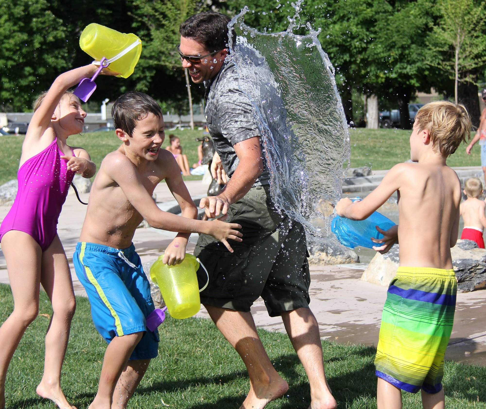

Få en fadder du også!
Vi i Friminutt tror at alle barn og unge har rett på en barndom med gode minne og noen å dele dem med. Vi tror at alle fortjener en venn man kan snakke med når det trengs. Gjennom fadderordningen kan du få møte våre faddere og dele dine tanker og opplevelser med dem. Måten vi gjøre dette på er gjennom våre snille og omgjengelige faddere fra universitet og høgskoler, som hver dag snakker med og møter tusenvis av barn og unge fra hele Norge. Vi svarer på spørsmål og trenger du en venn å være sammen med så kan du få bli en del av oss HER(LEGG INN LINK TIL til foreldre?)
Fadderordningen
Fadderordningen vil være en portal for barn og unge, i form av en app, hvor de kan møte studenter fra universitet og høgskole. Her kan de får svar på sine spørsmål, oppleve nye impulser, få hjelp til å utvikle seg sosialt, og møte faddere. Tanken er å skape et tilbud i hverdagen til de som ikke har et. Skoler forsøker sitt beste for å hjelpe alle elever, men lærerne er presset på tid og skoler mangler ressurser. Derfor tror vi at en frivillig fadderordning kan utgjøre en stor forskjell hos barn og unge. Det vil være forskjellige nivåer av involvering både fra elever og faddere sin side. Brukere kan for eksempel velge å bare stille spørsmål, eller man kan ha en samtale med en fadder.

Alle elever vil logge inn ved hjelp av feide, slik at man ikke kan være anonym. Dette for å unngå at tjenesten misbrukes. Det vil ikke være mulig for brukere å hverandre , og kun faddere og Friminutt vil vite identiteten til brukerne. Informasjon om elever er selvsagt konfidensielt, og samtlige frivillige har taushetsplikt så lenge det ikke fører til at en bruker eller noen rundt brukeren blir skadet.
En bruker og en fadder blir matchet gjennom interesser og kjønn. Vi forsøker å pare opp elever og faddere slik at de er av samme kjønn så langt det lar seg gjøre. I starten vil kontakten foregå på internett, og her har man et eget rom for å snakke sammen som kun fadder og elev kan benytte. Samtalen lagres for kvalitetssikring, og for å unngå misbruk av tjenesten. Skulle det være ønskelig for brukeren, kan det arrangeres møter mellom mentor og elev. I så fall kreves det foreldre eller foresattes godkjenning, og vi anbefaler at foreldre/foresatte er med på første møte, slik at man får møtt fadderen, og kan få bli kjent med vedkommende.
Ved personlige møter kan man utøve de fritidsaktiviteter som er ønskelige, men det skal ikke påføre fadder økonomiske utgifter som ikke er godkjent av fadder på forhånd, eller som ikke dekkes av Friminutt. Det jobbes med å skaffe sponsorer som kan bistå med fritidstilbud, og tilbudet vil bli oppdatert fortløpende. Se egen side for sponsor hvis du ønsker å bidra. LEGG INN SPONSORLINK HER